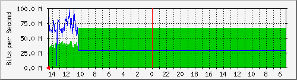

INTERNET CHECHPOINT PERISUR
| System: | FW-CHKP-CD-1 in Unknown |
| Maintainer: | root@localhost |
| Description: | eth2 |
| ifType: | ethernetCsmacd (6) |
| ifName: | eth2 |
| Max Speed: | 125.0 MBytes/s |
| Ip: | 10.1.101.113 (No DNS name) |
Estadísticas actualizadas el Jueves 21 de Julio de 2022 a las 14:35,
'FW-CHKP-CD-1' ha estado funcionando durante 399 days, 2:33:52.
Gráfico diario (5 minutos : Promedio)

|
Máx |
Promedio |
Actual |
| Entrante: |
66.1 Mb/s (6.6%) |
62.6 Mb/s (6.3%) |
42.8 Mb/s (4.3%) |
| Saliente: |
96.7 Mb/s (9.7%) |
33.6 Mb/s (3.4%) |
88.1 Mb/s (8.8%) |
Gráfico semanal (30 minutos : Promedio)

|
Máx |
Promedio |
Actual |
| Entrante: |
66.1 Mb/s (6.6%) |
65.6 Mb/s (6.6%) |
37.2 Mb/s (3.7%) |
| Saliente: |
83.3 Mb/s (8.3%) |
29.2 Mb/s (2.9%) |
66.3 Mb/s (6.6%) |
Gráfico mensual (2 horas : Promedio)
|
Máx |
Promedio |
Actual |
| Entrante: |
66.1 Mb/s (6.6%) |
66.0 Mb/s (6.6%) |
40.0 Mb/s (4.0%) |
| Saliente: |
71.2 Mb/s (7.1%) |
28.6 Mb/s (2.9%) |
71.2 Mb/s (7.1%) |
Gráfico anual (1 día : Promedio)
|
Máx |
Promedio |
Actual |
| Entrante: |
66.1 Mb/s (6.6%) |
37.4 Mb/s (3.7%) |
66.1 Mb/s (6.6%) |
| Saliente: |
54.4 Mb/s (5.4%) |
27.8 Mb/s (2.8%) |
28.4 Mb/s (2.8%) |
| VERDE ### |
Entrante:coming Traffic in Bits per Second |
| AZUL ### |
Saliente:going Traffic in Bits per Second |